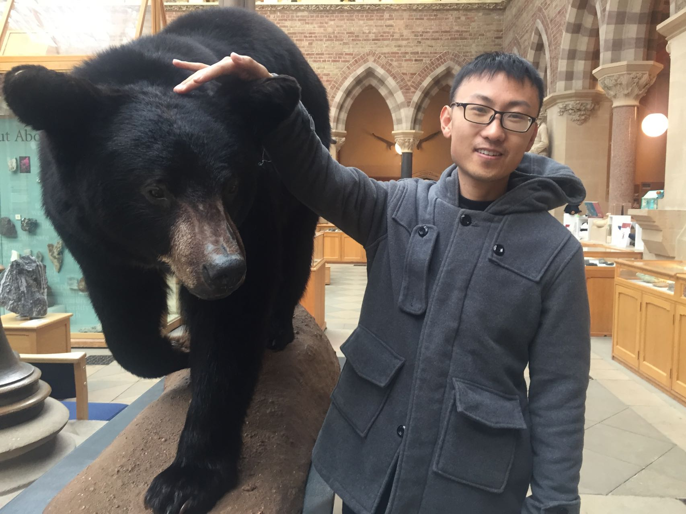

|
Zhengzhe Liu
PhD candidate
Dept. of Computer Science and Engineering
The Chinese University of Hong Kong
Hong Kong
Email: zzliu [at] cse.cuhk.edu.hk
|

|
Biography
I am a PhD student in Computer Science and Engineering Department, The Chinese University of Hong Kong (CUHK), supervised by Prof. Chi-Wing Fu.
Before that, I got MPhil from The Chinese University of Hong Kong and Bachelor from Shanghai Jiao Tong University (SJTU).
My research interest includes AI Generated Content (AIGC), Computer Graphics, and 3D Generation.
Experience
-
2024.5~
Incoming Post Doctoral Associate
-
2023.7~2023.10
Research Intern
Topic: Scene Decomposition and Diffusion Models
*: equal contribution, †: corresponding author
-
EXIM: A Hybrid Explicit-Implicit Representation for Text-Guided 3D Shape Generation
Zhengzhe Liu, Jingyu Hu, Ka-Hei Hui, Xiaojuan Qi, Daniel Cohen-Or, Chi-Wing Fu
SIGGRAPH Asia (Journal Track), 2023.
ACM Transactions on Graphics (TOG), 2023,
[Code]
[Project page]
-
CLIPXPlore: Coupled CLIP and Shape Spaces for 3D Shape Exploration
Jingyu Hu*, Ka-Hei Hui*, Zhengzhe Liu, Hao (Richard) Zhang, Chi-Wing Fu
SIGGRAPH Asia, 2023.
-
Texture Generation on 3D Meshes with Point-UV Diffusion
Xin Yu, Peng Dai, Wenbo Li, Lan Ma, Zhengzhe Liu†, Xiaojuan Qi† (†: Corresponding author)
IEEE International Conference on Computer Vision (ICCV) Oral , 2023.
[Project page]
-
DreamStone : Image as Stepping Stone for Text-Guided 3D Shape Generation
Zhengzhe Liu, Peng Dai, Ruihui Li, Xiaojuan Qi, Chi-Wing Fu
IEEE Transactions on Pattern Analysis and Machine Intelligence (TPAMI), 2023.
[Code]
[Project page]
-
Neural Wavelet-domain Diffusion for 3D Shape Generation, Inversion, and Manipulation
Jingyu Hu*, Ka-Hei Hui*, Zhengzhe Liu, Ruihui Li, Chi-Wing Fu
ACM Transactions on Graphics (TOG), 2023.
-
MGFN++: Magnitude-Contrastive Glance-and-Focus Network for Weakly-Supervised Video Anomaly Detection
Yingxian Chen, Weibin Kou, Wilton Fok, Zhengzhe Liu†, Xiaojuan Qi, Yik-Chung Wu† (†: Corresponding author)
Preprint, 2023.
-
Command-driven Articulated Object Understanding and Manipulation
Ruihang Chu, Zhengzhe Liu, Xiaoqing Ye, Xiao Tan, Xiaojuan Qi, Chi-Wing Fu, Jiaya Jia
IEEE Conference on Computer Vision and pattern Recognition (CVPR), 2023.
[Code]
-
ISS : Image as Stepping Stone for Text-Guided 3D Shape Generation
Zhengzhe Liu, Peng Dai, Ruihui Li, Xiaojuan Qi, Chi-Wing Fu
International Conference on Learning Representations (ICLR) Spotlight , 2023.
[Code]
-
You Only Need One Thing One Click: Self-Training for Weakly Supervised 3D Scene Understanding
Zhengzhe Liu, Xiaojuan Qi, Chi-Wing Fu
Preprint, 2023.
[Code]
-
MGFN : Magnitude-Contrastive Glance-and-Focus Network for Weakly-Supervised Video Anomaly Detection
Yingxian Chen, Zhengzhe Liu, Baoheng Zhang, Wilton Fok, Xiaojuan Qi, Yik-Chung Wu
AAAI Conference on Artificial Intelligence (AAAI) Oral , 2023.
[Code]
-
Sparse2Dense: Learning to Densify 3D Features for 3D Object Detection
Tianyu Wang, Xiaowei Hu, Zhengzhe Liu, Chi-Wing Fu
Neural Information Processing Systems (NeurIPS), 2022.
[Code]
-
Towards Implicit Text-Guided 3D Shape Generation
Zhengzhe Liu, Yi Wang, Xiaojuan Qi, Chi-Wing Fu
IEEE Conference on Computer Vision and pattern Recognition (CVPR), 2022.
[Code]
-
TWIST: Two-Way Inter-label Self-Training for Semi-supervised 3D Instance Segmentation
Ruihang Chu, Xiaoqing Ye, Zhengzhe Liu, Xiao Tan, Xiaojuan Qi, Chi-Wing Fu, Jiaya Jia
IEEE Conference on Computer Vision and pattern Recognition (CVPR), 2022.
[Code]
-
MEN: Mutual Enhancement Networks for Sign Language Recognition and Education
Zhengzhe Liu, Lei Pang, Xiaojuan Qi.
IEEE Transactions on Neural Networks and Learning Systems (TNNLS), 2022.
-
3D-to-2D Distillation for Indoor Scene Parsing
Zhengzhe Liu, Xiaojuan Qi, Chi-Wing Fu
IEEE Conference on Computer Vision and pattern Recognition (CVPR), Oral (4.3% acceptance rate) , 2021.
[Code]
-
One Thing One Click: A Self-Training Approach for Weakly Supervised 3D Semantic Segmentation
Zhengzhe Liu, Xiaojuan Qi, Chi-Wing Fu
IEEE Conference on Computer Vision and pattern Recognition (CVPR), 2021.
[Code][Video]
-
Global Texture Enhancement for Fake Face Detection in the Wild
Zhengzhe Liu, Xiaojuan Qi, Philip H.S. Torr.
IEEE Conference on Computer Vision and Pattern Recognition (CVPR), 2020.
[Code]
-
GeoNet++: Iterative Geometric Neural Network with Edge-Aware Refinement for Joint Depth and Surface Normal Estimation
Xiaojuan Qi*, Zhengzhe Liu*, Renjie Liao, Philip H. S. Torr, Raquel Urtasun, Jiaya Jia.
IEEE Transactions on Pattern Analysis and Machine Intelligence (TPAMI), 2020.
[Code][Training data]
-
3D Motion Decomposition for RGBD Future Dynamic Scene Synthesis
Xiaojuan Qi*, Zhengzhe Liu*, Qifeng Chen, Jiaya Jia.
IEEE Conference on Computer Vision and Pattern Recognition (CVPR), 2019.
-
Self-Boosted Gesture Interactive System with ST-Net
Zhengzhe Liu* , Xiaojuan Qi*, Lei Pang.
ACM Multimedia Conference (ACM MM), 2018.
-
GeoNet: Geometric Neural Network for Joint Depth and Surface Normal Estimation
Xiaojuan Qi, Renjie Liao, Zhengzhe Liu, Raquel Urtasun, Jiaya Jia
IEEE Conference on Computer Vision and Pattern Recognition(CVPR), 2018.
[Code][Training data]
-
Augmented Feedback in Semantic Segmentation under Image Level Supervision
Xiaojuan Qi, Zhengzhe Liu, Jianping Shi, Jiaya Jia.
European Conference on Computer Vision (ECCV), 2016.
Honors and Awards
Microsoft Research Asia (MSRA) Fellowship Nomination Award 2022 (33 in Asia).
Shanghai Excellent Graduate Award
Meritorious Winner of MCM (Mathematical Contest in Modeling)
Excellent Student Scholarship for 3 times, Shanghai Jiao Tong University
Litian Tangren Scholarship (RMB 10,000)
Professional Activities
- Conference Review:
ACM SIGGRAPH Asia 2023.
International Conference on Computer Vision and Pattern Recognition (CVPR) 2023, 2022, 2021.
International Conference on Learning Representations (ICLR) 2023.
Neural Information Processing Systems (NeurIPS) 2023.
European Conference on Computer Vision (ECCV) 2022.
International Conference on Computer Vision (ICCV) 2023, 2021.
Association for the Advancement of Artificial Intelligence (AAAI) 2021.
- Journal Review:
IEEE Transactions on Pattern Analysis and Machine Intelligence (TPAMI).
International Journal of Computer Vision (IJCV).
IEEE Transactions on Neural Networks and Learning Systems (TNNLS).
IEEE Transactions on Image Processing (TIP).
IEEE Transactions on Multimedia (TMM).
IEEE Transactions on Circuits and Systems for Video Technology (TCSVT).
IEEE Transactions on Intelligence Transportation Systems (TITS).
Computers in Biology and Medicine (CIBM).
- Invited Talk:
Carnegie Mellon University. Topic: Modeling and Creating the 3D World. 2023.10
ZhiDongXi (智東西) 以圖為梯——從文字到 3D 形狀生成. 2023.6 [Link][Video]
AI TIME: ICLR sharing session. 2023.6 [Video]
CVPR 2022 Workshop on ScanNet Indoor Scene Understanding Challenge. 2022.6 [Link][Video]
Teaching Assistants
| CSCI 3170. Introduction to Database Systems |
| ENGG 2020. Digital Logic and Systems |
| CSCI 3180. Principles of Programming Languages |
| CSCI 1580. Visual Programming |
| ENGG 1100. Engineering and Design |